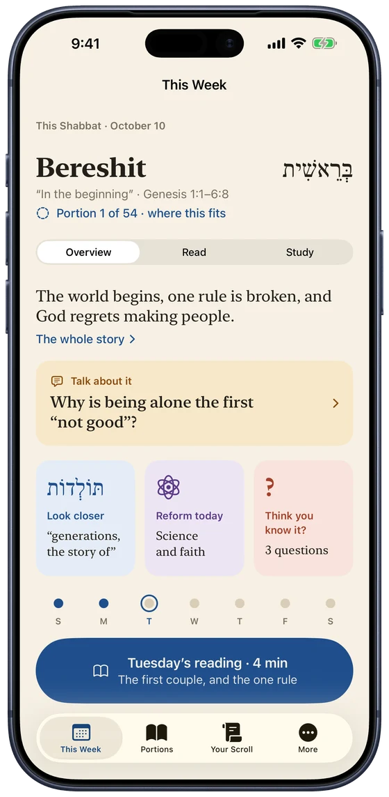
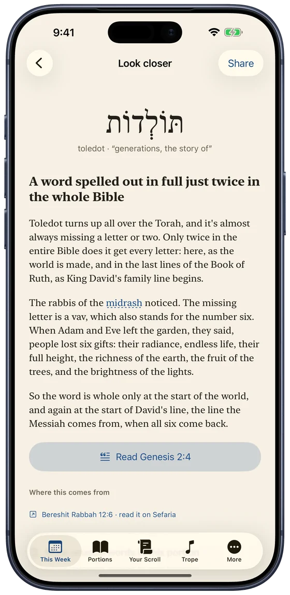
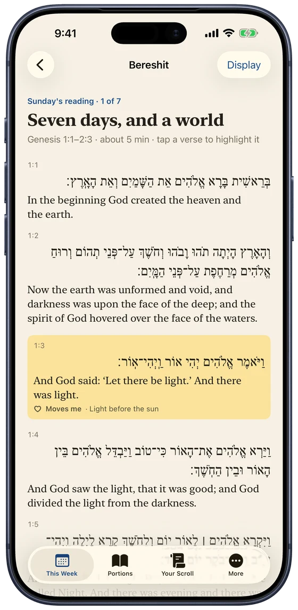
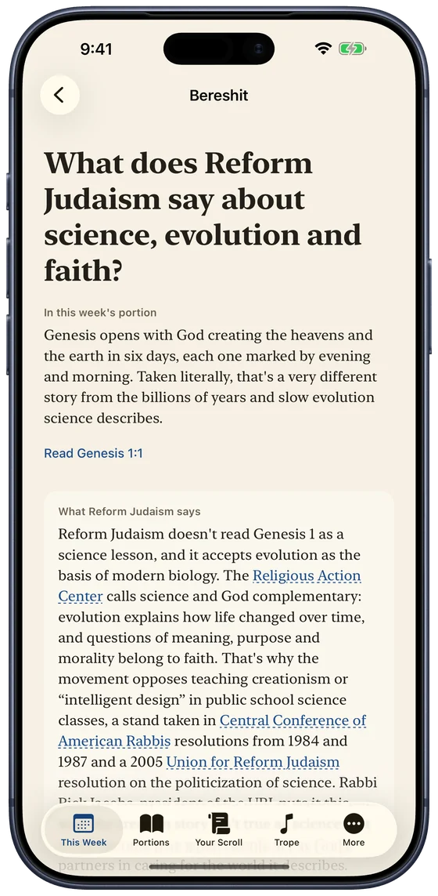
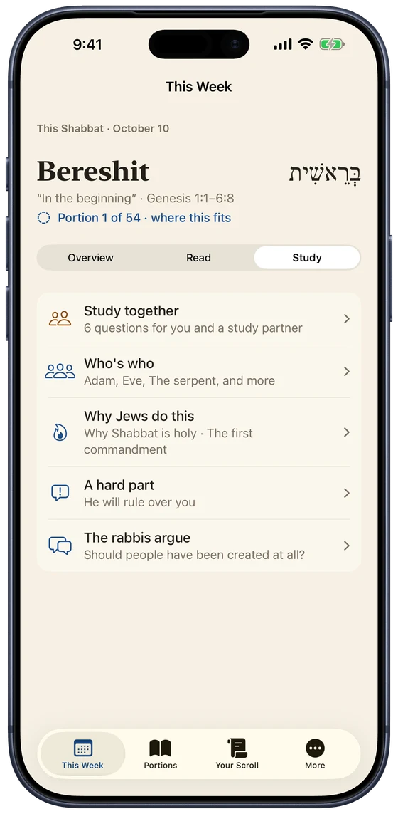
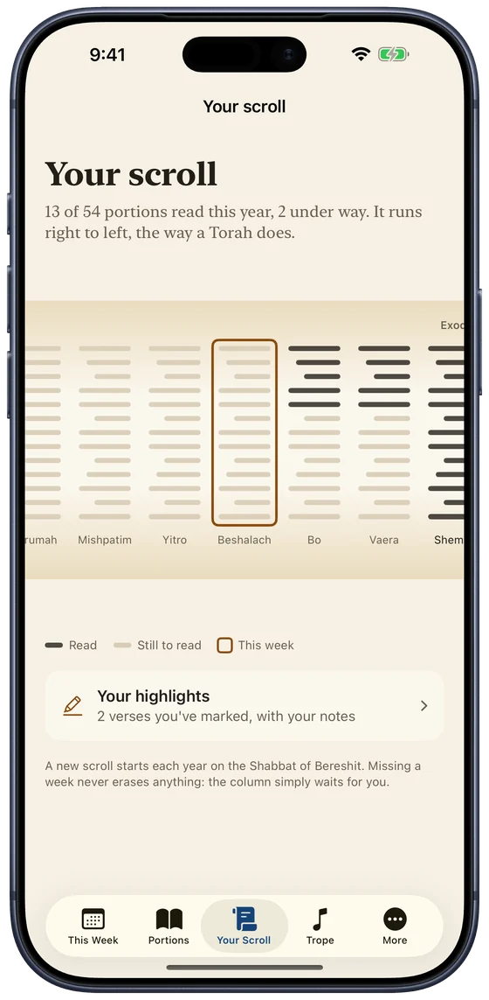
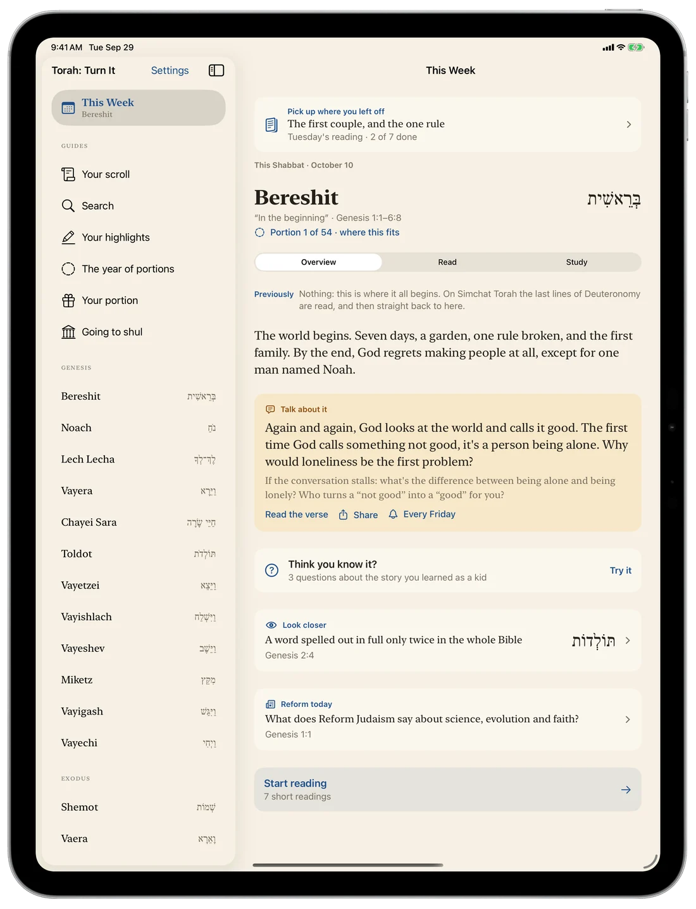

For iPhone and iPad
This week's Torah portion, a few minutes a day.
Every week, Jewish communities read the next portion of the Torah. Torah: Turn It gives you the story in plain English, a question for the Shabbat table, one thing worth a closer look, and the text itself in seven short readings, one for each day.
Coming to the App Store for iPhone and iPad.

Every portion, three ways in.
Start wherever you like. Nothing assumes you went to Hebrew school, and nothing is dumbed down.
Overview
- What happened before this week
- The story, told plainly
- A question to talk about
- A short "Think you know it?" quiz
- Look closer: one surprise in the Hebrew
- What Reform Judaism says about it
Read
- Seven readings, Sunday through Shabbat
- About five minutes each
- English, or Hebrew with vowels, or with the trope marks
- Tap a verse to highlight it and add a note
- Your place is kept for you
Study
- Study together: questions for a partner
- Who's who in this portion
- Why Jews do this
- A hard part, not smoothed over
- Where the rabbis argue
- Patterns in the Hebrew






A glossary as you read
Underlined words open a short explanation, so a word like midrash never stops you.
Your bar or bat mitzvah portion
Enter a birthday and it finds the portion, then shows you where it sits in the year.
Going to shul
A guide to what happens at a service, for first-timers and for anyone who never asked.
A widget and Friday reminders
The week's portion on your Home Screen, and the table question on Friday if you want it.
Israel or the diaspora
Some weeks the two calendars read different portions. Pick yours and it follows along.
Private, and synced by you
No account and no tracking. Highlights sync between your devices through your own iCloud.